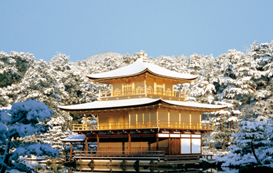
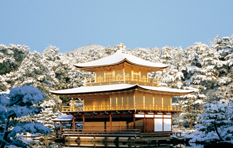

Le Kinkaku-ji est le nom usuel du Rokuon-ji situé à Kyōto au Japon.
Dans les années 1220, le site abrite la villa Kitayamadai de Saionji Kintsune (1171-1244, chef du clan Saionji qui fait partie d'une branche des Fujiwara) ainsi que le temple Saionji, inauguré en 122410. Après le déclin des Saionji, la villa et le temple ne sont plus entretenus ; seule une mare demeure de cette époque. Yoshimitsu (1358-1408), le 3e des shoguns Ashikaga, abdique en 1394 pour laisser la place à son fils Yoshimochi. Trois ans plus tard, en 1397, il achète le site au clan Saionji et commence à y construire une nouvelle villa, Kitayamaden, en faisant de son mieux pour en faire un lieu exceptionnel, destiné à accueillir plusieurs reliques bouddhistes. Il y réside jusqu'à sa mort. Ensuite, conformément à ses volontés, son fils Yoshimochi en fait un temple zen de l'école Rinzai qu'il baptise Rokuon-ji12. Le temple a été incendié plusieurs fois pendant la guerre d'Ōnin (1467-1477) et seul le Pavillon d'or a survécu. Le jardin a cependant gardé son aspect de l'époque. Le 10 juin 1897, l'État japonais promulgue une loi portant sur la protection des sanctuaires et temples anciens14. Le Kinkaku-ji devient la même année l'un des premiers trésors nationaux.
 

En 1994, le Pavillon d'or est inscrit sur la liste du patrimoine mondial de l'UNESCO,
parmi les monuments historiques de l'ancienne Kyoto.